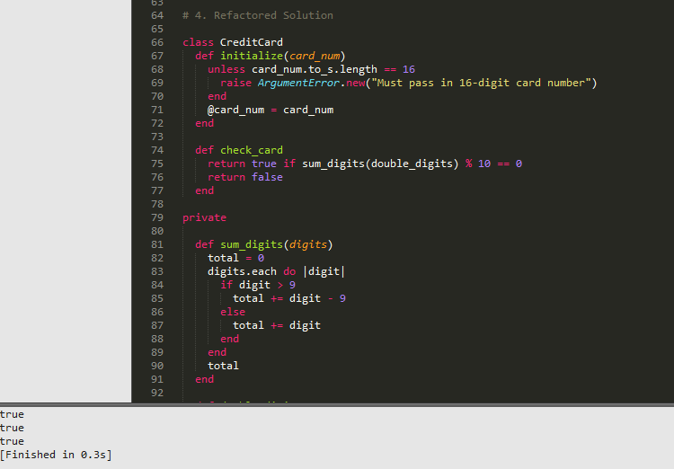

Pairing and Feedback in Phase 0
Is it worth it? (spoiler: it depends)
Pairing
In terms of software engineering, pairing means collaborating with others on projects in order to create and/or troubleshoot code and to learn skills and approaches. Pairing on curriculum (such as the challenges that DBC has had us solve in phase 0) is undoubtedly different from pairing on projects in a workplace environment, but I can at least speak to the former.
Pairing exposes students to different mind and skill sets. This makes it a great way to learn new skills, methods, or little tricks that make your coding life easier. In my last pairing session alone I learned how to test/run code right in Sublime Text and a new way of integrating error messages in addition to getting a refresher on a mathematical concept that I was a little rusty on.
The aforementioned trick to run code in Sublime. Ctrl+B for Windows users. The trues are from my driver test code further down.
As long as all parties involved are communicating clearly and openly, pairing can be pretty useful. There are some instances though where it gets frustrating. With a weekly or unit pairing requirement like DBC has, pairing is often done out of obligation rather than need (at least it feels this way sometimes). You can still benefit from it, but for a person whose learning style tends toward the "read and figure it out and ask questions if necessary" side of things, pairing can slow you down as you want to delve into the material. It would be great if pairing were more relaxed, more of a "Hey can you jump on a hangout with me for a bit and explain this one thing or give me some direction?" situation. The downside of this though is that more advanced boots wouldn't likely pair often (except for guided pairing sessions), and less advanced boots might feel too intimidated to ask to pair if it wasn't required. It's all about finding the right balance between preparation for web developer careers, adding as much of a human element to a distance-learning phase as possible, and actually learning or getting stuff done.
Feedback
Writing feedback is an important part of the pairing process, and can be useful not only to the other person, but to yourself as well. When I was writing feedback the other day I suggested that my pair work on particular communication skill in the future. As soon as I had typed that I realized, "Gee, I really need to work on that as well." Writing the feedback for my pair helped me reflect. Unless there is something glaringly obvious (and there hasn't been anything that negative yet) I'm usually too absorbed in the coding to recall enough to write good constructive feedback though. The few constructive comments that I've left have either been directly related to something said by my pair in the session (along the lines of "I'm sorry, I should have told you where I was typing that"), or me really trying hard to find something to write about. It's not so much that the other person was perfect, but rather that I'm a pretty even-keeled person and don't find much worth complaining about.
Receiving feedback, assuming that it's actionable, specific, and kind, can help your growth not just as a web developer but also as a person. Most of the constructive feedback that I've received so far has mentioned things that I feel have always been my weaknesses, such as speaking up, but it's helpful to hear about that from another person's perspective. It lets me know that I should feel free to speak up more in the future (whether pairing or not) without worrying that I'm being overbearing. Life lessons and coding lessons.
Overall
In the end I think that pairing has been more useful to guide my learning when compared to feedback, but not as much as individual research has been. It's not an entirely fair comparison as I've worked and done research by myself far more than I've worked with someone else. I'm sure that pairing in person and pairing on projects (as opposed to curriculum) will feel more beneficial, but I'm not completely sold on phase-0 pairing at this point.